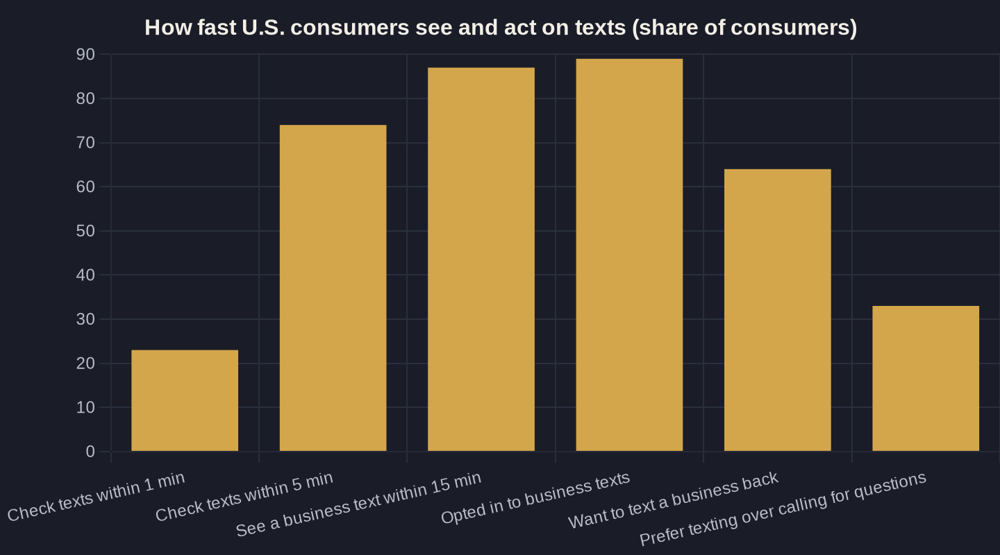

Missed-Call Text-Back: Recover the Leads You're Losing
A simple automation that turns the calls you can't answer into text conversations you can — before the caller dials your competitor.
Key takeaways
- Roughly 6 in 10 calls to small businesses go unanswered — the largest leak sitting downstream of every marketing dollar you spend.
- Speed wins: responding within an hour makes you about 7x more likely to qualify a lead, and a missed-call text-back collapses your response time to seconds.
- Text beats voicemail — 87% of consumers see a business text within 15 minutes, and more people would rather text than call when they have a question.
- The Owner's Math is lopsided: a roughly $30/month automation can reclaim dozens of already-paid-for leads you're currently losing.
- Text-back is the first touch, not the whole system — pair it with automated follow-up and review requests so the recovered lead actually converts.
What a Missed Call Text Back Actually Does
A missed-call text-back is one of the simplest automations a local service business can run, and the easiest profit most owners leave on the table. When someone calls and the phone goes unanswered — line busy, after hours, your tech on a ladder — an automatic text fires back to that number within seconds: "Sorry we missed you, this is [Business]. How can we help?" The caller replies by text, and the conversation keeps going instead of dying at the dial tone.
That is the entire mechanic. No new hire, no second phone line, no app for the customer to download. It plugs the most common leak in a local business: the call nobody picked up. And the missed call text back works because an inbound caller is not a cold lead — they searched, found your number, and dialed it on purpose. Invoca's analysis of more than 60 million phone calls across nine industries found that 37% of marketing-driven inbound calls convert right there on the line, which tells you how ready-to-buy these people already are when they reach you.
Most of Your Calls Already Go Unanswered
Here is the uncomfortable part. Most of the calls you are paying to generate never reach a human at all. A 2024 study of 85 small businesses across 58 industries found that only 37.8% of incoming calls are answered by a live person — meaning roughly six in ten go to voicemail, a hold queue, or nothing at all.
For a local service business, that is not a minor inefficiency. It is the single biggest hole in your funnel, and it sits downstream of every dollar you spend on ads, SEO, and the wrap on your truck. Worse, the missed caller rarely waits around. The reality is that most callers who can't reach a business simply move on — a large share dial a competitor on the next search result, and most never call you back. The call you missed at 2:14 p.m. is not a follow-up task for tomorrow. It is gone by 2:16 unless something reaches the caller first.
Speed Is the Entire Game
The window is brutally short, and speed decides everything. The classic Harvard Business Review audit of 2,241 U.S. companies found that firms contacting a web lead within one hour were nearly seven times more likely to have a meaningful conversation with a decision-maker than those that waited just an hour longer — and 60 times more likely than firms that waited a full day. Yet the average first response took 42 hours, and 23% of companies never responded at all.
A missed call text back collapses that 42-hour average to roughly 42 seconds. And it lands where people actually are: about 74% of consumers check their text notifications within five minutes, and 23% within one minute. You are not asking the customer to change their behavior. You are meeting a high-intent buyer in the channel they already glance at compulsively, while they still remember why they called.
Why a Text Beats a Voicemail or a Callback
So why text instead of a voicemail or a "we'll call you back" system? Because voicemail is dead and texting is where attention lives. EZ Texting's 2026 survey found that 89% of U.S. consumers have now opted in to receive texts from at least one business — up from 66% in 2021 — and 87% have seen a business's text within 15 minutes of it being sent. A voicemail, by contrast, often goes unheard for hours, if the caller bothers to leave one at all.
Texting also matches what people say they want. When they have a question, 33% of consumers would rather text a business than call it, versus just 18% who prefer to call, and 64% explicitly want the ability to text a business back. A missed-call text-back gives them exactly that: a thread they can answer with one thumb, between patients or between job sites, without sitting on hold.
| Metric | Without text-back | With missed-call text-back |
|---|---|---|
| Calls answered live (~38%) | 76 | 76 |
| Calls missed | 124 | 124 |
| Missed calls recovered into a text thread | 0 | ~31 (25% recovery) |
| Extra paid-for leads kept per month | 0 | ~31 |
| Typical cost of the automation | n/a | ~$30/mo |

The Owner's Math on One Recovered Call
Run the numbers the way an owner should. Say your ads and search presence drive 200 calls a month and, like most businesses, you answer about 38% of them live. That leaves roughly 124 missed calls. If a missed-call text-back recovers even a quarter of those into a real text conversation, that is about 31 reclaimed leads a month you were already paying for and throwing away.
Now price one job in your trade — a plumbing repair, a new-patient exam, an HVAC install — and the math gets loud fast. Recovering a handful of those at a few hundred to a few thousand dollars each turns a roughly $30-a-month automation into one of the highest-return tools in your front office. This is the core of Owner's Math: trace what one recovered call is actually worth before you decide it doesn't matter. The table below shows how lopsided that trade is.
Setting It Up Without Annoying Anyone
Setting it up is not the hard part; doing it without sounding like a robot is. A few rules keep it human:
- Reply instantly, identify a real person, and ask one simple question. "This is Dana at A-Plus Plumbing — did you need same-day service?" beats a generic "How can we help?"
- Make sure someone is actually watching the thread during business hours. The text-back opens the door; a human still has to walk through it.
- Set honest expectations after hours: tell them when you open and that you'll call first thing.
The text-back is the first touch, not the whole system. It hands a warm, identified lead to your follow-up process — and that is where most owners still leak. Pairing it with Automated Lead Follow-Up: Convert More Without Lifting a Finger keeps the thread moving even when you're slammed on a job. And for shops that miss a high volume of calls, an AI receptionist that never lets a call go unanswered can carry the conversation further before a human steps in.
Where Text-Back Fits in Your Front Desk
Text-back is one piece of a front desk that doesn't drop leads. On its own it recovers the call. Connected to the rest of your stack, it compounds: the same number that saved the lead can later send the appointment reminder, then the review request once the job is done. That last step matters more than most owners think — see AI Review Management: Automate Requests and Replies for how recovered customers become the five-star proof that lowers your next cost per call.
All of this sits inside a larger shift toward AI marketing and automation for local service businesses — small, boring automations that quietly stop revenue from leaking. Missed-call text-back is the one I'd turn on first, because the leak is large, the fix is cheap, and the payback shows up in your first week.
If you want help mapping where your own calls are leaking — and what one recovered call is actually worth in your numbers — that is exactly the kind of thing we work through on a call. Subscribe to the newsletter for more owner-to-owner breakdowns like this one, or book a time to run your Owner's Math together.
Sources
- Harvard Business Review — "The Short Life of Online Sales Leads" (Oldroyd, McElheran, Elkington) (2011)
- Invoca — Call Conversion Industry Benchmarks Report 2025 (2025)
- EZ Texting — 2026 Consumer Texting Behavior Report (2026)
- SimpleTexting — SMS Marketing Statistics 2026 (2026)
- Aira — Missed Business Call Statistics (citing 2024 411 Locals study) (2024)
- Dialzara — The Cost of a Missed Call: What Small Businesses Lose (2025)
Want this run on your numbers?
Book a call and we will run the Owner's Math on your business — clear numbers, a straight plan, no pitch. Or read the free Playbook first.